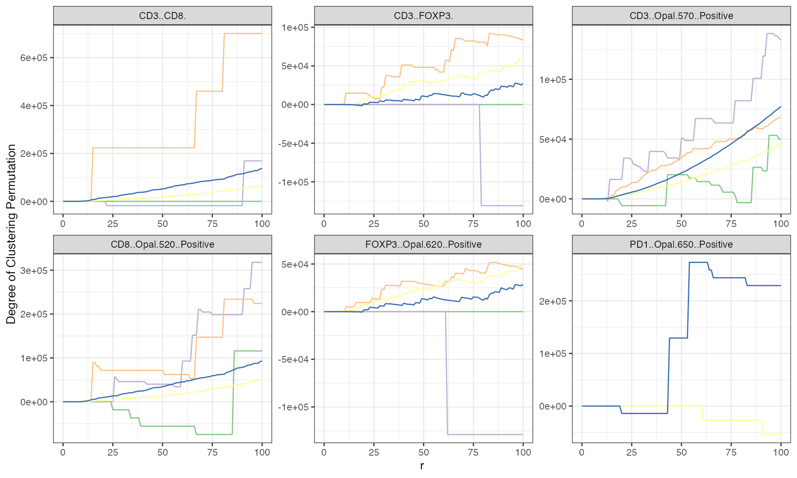
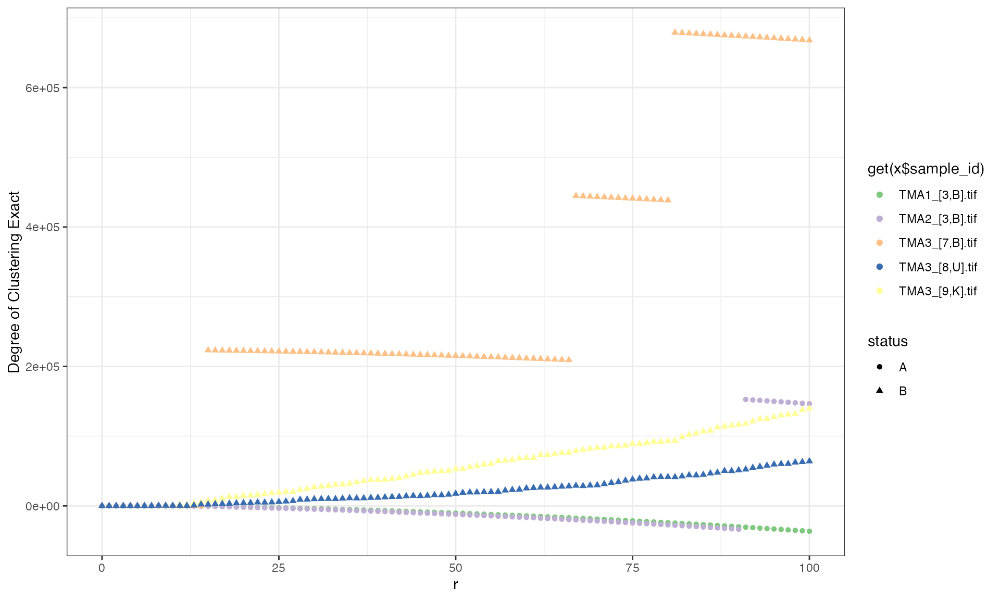
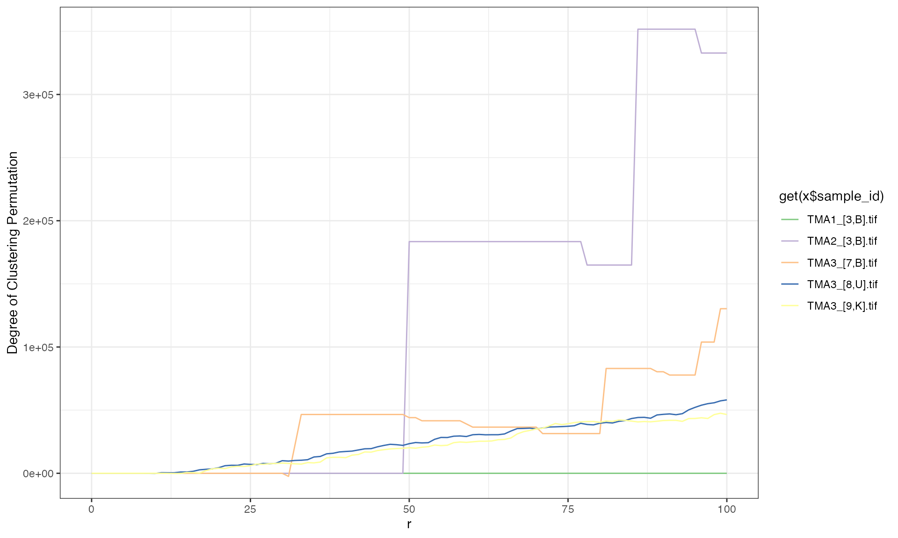
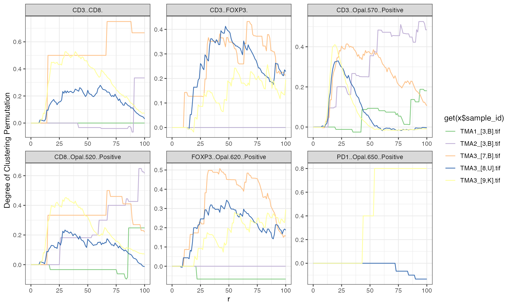
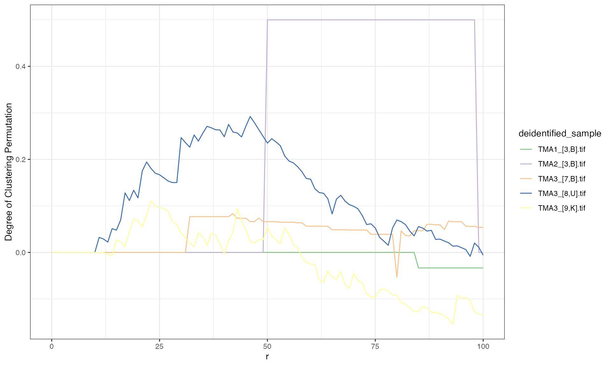

Background for Tissue Microarray (TMA) Data
A tissue microarray (TMA) is an array of samples which are obtained by taking a slice of a biopsied FFPE tumor. Each individual slice is referred to as a core. Each core is placed on a TMA and is then stained with multiple antibodies and fluorophores which illuminate when a laser is shined at them with varying wavelengths. The intensity is measured and then a random forest algorithm is used to classify the cells as being positive for a particular marker which allows us to phenotype cells. A schematic of this process is provided in Figure 1.
Create Multiplex ImmunoFlourescent (mif) Object
spatialTIME functions use a custom mif object which can
be created using create_mif. The mif object
has 6 slots storing the:
- Clinical data which must contain:
- a column whose column name matches one in the sample dataset.
- Sample summary data including counts/percentages of each positive
cells for each single or combination of markers and total number of
cells for each core. In order to use
create_miffunction this table must contain:- a column whose column name matches one in the clinical dataset, and
- a column whose column name matches one in the spatial list.
- Spatial list (1 per each core):
- This object should be a list object where each element of the list
corresponds to a core and each element should be a \(n\times p\) dataframe (\(n\) = number of cells) containing:
- a column name that matches a column name for the sample file (for merging and potential downstream analysis linking to clinical variables),
-
XMin,XMax,YMin, andYMaxwhich defines the area that a cell occupies which is eventually used to assign a location for each cell with the x-position being the mean of theXMinandXMaxand y-position being the mean of theYMinandYMax, and - a set of columns that indicate whether a cell is positive to one or multiple markers.
- This object should be a list object where each element of the list
corresponds to a core and each element should be a \(n\times p\) dataframe (\(n\) = number of cells) containing:
- patient id:
- a column name used to merge clinical and summary data
- sample_id:
- a column name used to merge the spatial and summary data
- derived:
- where all of the plots and spatial clustering measures are stored
We include one example of a clinical and sample dataset which have a total of 229 patients with one core. Out of those 229 samples, only 5 are included in our package.
# Make sure the variable types are the same for deidentified_id and
# deidentified_sample in their corresponding datasets
x <- create_mif(clinical_data = example_clinical %>%
mutate(deidentified_id = as.character(deidentified_id)),
sample_data = example_summary %>%
mutate(deidentified_id = as.character(deidentified_id)),
spatial_list = example_spatial,
patient_id = "deidentified_id",
sample_id = "deidentified_sample")
x #prints a summary of how many patients, samples, and spatial files are present
#> 229 patients spanning 229 samples and 5 spatial data frames were foundPlotting Cores
An individual plot for each core (each sample) is created. Plots can
be assigned to an R object, such as within the empty
derived slot and printed to a PDF if a file name is
provided.
When studying phenotype and individual markers, note that it is important to have the individual before the phenotype markers. This will ensure that the phenotype that are derived by multiple markers are not plotted over by the individual marker. For instance, below the the first plot appears to have no cytotoxic T cells (CD3+ and CD8+), but then the order is changed we see the cytotoxic T cells. Moral of the story: Put the marker combinations before the single markers.
mnames_bad <- c("CD3..CD8.","CD3..FOXP3.","CD3..Opal.570..Positive",
"CD8..Opal.520..Positive","FOXP3..Opal.620..Positive",
"PDL1..Opal.540..Positive", "PD1..Opal.650..Positive")
# Used to make the legends in both plots below be in same order and use the
# same coloring scheme for the purpose making a common legend
values = RColorBrewer::brewer.pal(length(mnames_bad), "Accent")
names(values) = mnames_bad
#add an element in the `derived` object position
x<- plot_immunoflo(x, plot_title = "deidentified_sample", mnames = mnames_bad,
cell_type = "Classifier.Label")
#> Warning: `progress_estimated()` was deprecated in dplyr 1.0.0.
#> ℹ The deprecated feature was likely used in the spatialTIME package.
#> Please report the issue at
#> <https://github.com/FridleyLab/spatialTIME/issues>.
#> This warning is displayed once every 8 hours.
#> Call `lifecycle::last_lifecycle_warnings()` to see where this warning was
#> generated.
#> Scale for y is already present.
#> Adding another scale for y, which will replace the existing scale.
#> Scale for y is already present.
#> Adding another scale for y, which will replace the existing scale.
#> Scale for y is already present.
#> Adding another scale for y, which will replace the existing scale.
#> Scale for y is already present.
#> Adding another scale for y, which will replace the existing scale.
#> Scale for y is already present.
#> Adding another scale for y, which will replace the existing scale.
bad_names <- x[["derived"]][["spatial_plots"]][[4]] +
theme(legend.position = 'bottom') +
scale_color_manual(breaks = mnames_bad,
values = values,
labels = mnames_bad %>%
gsub("..Opal.*", "+", .) %>%
gsub("\\.\\.", "+", .) %>%
gsub("\\.", "+", .))
#> Scale for colour is already present.
#> Adding another scale for colour, which will replace the existing scale.
mnames_good <- c("CD3..Opal.570..Positive","CD8..Opal.520..Positive",
"FOXP3..Opal.620..Positive","PDL1..Opal.540..Positive",
"PD1..Opal.650..Positive","CD3..CD8.","CD3..FOXP3.")
x <- plot_immunoflo(x, plot_title = "deidentified_sample", mnames = mnames_good,
cell_type = "Classifier.Label")
#> Scale for y is already present.
#> Adding another scale for y, which will replace the existing scale.
#> Scale for y is already present.
#> Adding another scale for y, which will replace the existing scale.
#> Scale for y is already present.
#> Adding another scale for y, which will replace the existing scale.
#> Scale for y is already present.
#> Adding another scale for y, which will replace the existing scale.
#> Scale for y is already present.
#> Adding another scale for y, which will replace the existing scale.
good_names <- x[["derived"]][["spatial_plots"]][[4]] +
theme(legend.position = 'bottom') +
scale_color_manual(breaks = mnames_good,
values = values[match(mnames_good, names(values))],
labels = mnames_good %>%
gsub("..Opal.*", "+", .) %>%
gsub("\\.\\.", "+", .) %>%
gsub("\\.", "+", .))
#> Scale for colour is already present.
#> Adding another scale for colour, which will replace the existing scale.
x$sample %>% filter(deidentified_sample == 'TMA3_[9,K].tif') %>% select(c(2, 4:15)) %>%
pivot_longer(cols = 2:13, names_to = 'Marker', values_to = 'Count')
#> # A tibble: 12 × 3
#> deidentified_sample Marker Count
#> <chr> <chr> <dbl>
#> 1 TMA3_[9,K].tif FOXP3 (Opal 620) Positive Cells 34
#> 2 TMA3_[9,K].tif CD3 (Opal 570) Positive Cells 536
#> 3 TMA3_[9,K].tif CD8 (Opal 520) Positive Cells 83
#> 4 TMA3_[9,K].tif PD1 (Opal 650) Positive Cells 5
#> 5 TMA3_[9,K].tif PDL1 (Opal 540) Positive Cells 1
#> 6 TMA3_[9,K].tif CD3+ FOXP3+ Cells 34
#> 7 TMA3_[9,K].tif CD3+ CD8+ Cells 68
#> 8 TMA3_[9,K].tif CD3+ CD8+ FOXP3+ Cells 4
#> 9 TMA3_[9,K].tif CD3+ PD1+ Cells 5
#> 10 TMA3_[9,K].tif CD3+ PD-L1+ Cells 1
#> 11 TMA3_[9,K].tif CD8+ PD1+ Cells 0
#> 12 TMA3_[9,K].tif CD3+ CD8+ PD-L1+ Cells 0
gridExtra::grid.arrange(bad_names, good_names, ncol=2)# Estimating the degree of spatial clustering with Count Based Methods
Univariate
Count Based Methods
Ripley’s \(K\) measures the average number of neighboring cells across each cell. That is, the average (over all cells) number of cells within a specified radius of a cell. Ripley’s \(K\) is computed as follows:
\[\hat{K}(r) = \frac{1}{n(n-1)}\sum_{i=1}^{n}\sum_{j\neq i}w_{ij}{\bf 1}{(d(x_i,x_j)\le r)},\]
where \(r\) is the specified radius, \(d(x_i,x_j)\) is the distance between the \(i^{th}\) and \(j^{th}\) cell, \({\bf 1}_A\) is indicator function of event \(A\), and \(w_{ij}\) is the weights that are assigned for border corrections. The expected value of \(\hat{K}(r)\) is \(\pi r^2\), thus \(\hat{K}\) is expected to grow as a quadratic function of \(r\).
There are several edge corrections. Our studies have included a small number of cells and we recommend using the ‘isotropic’ or ‘translational’ edge correction, as opposed to the ‘border’ edge correction. The main goal of the edge correction is to account for the fact that there are unobserved points outside of the region, and the assumption is that the location of these cells has the same distribution as the study region. An excellent description of these corrections are provided here.
Distance Based Measures
The distribution of the nearest neighbor distances, \(\hat{G}(r)\), can be studied and is computed by
\[\hat{G}(r) = \frac{1}{n}\sum_{i=1}^{n}{\bf 1}(\min_{j}(\{d(x_i,x_j)\}\le r),\]
which is interpreted as the proportion of cells whose distance to its
nearest neighbor is less than \(r\).
Notice that there is not a weighting factor for each pair of points as
we saw above. The edge correction in these methods, reduced sample
(rs) and Hanisch (han), simply have different
cell inclusion conditions. The reduced sample correction is similar to
the border correction for count based methods, where the middle chunk of
the area of interest is studied. The Hanisch border correction leaves
out points whose \(k^{th}\) neighbor
can not be in the area of interest. For more information about these
border corrections, see the following article.
Need for Permutations
An underlying assumption used for many spatial clustering metrics is that the cells are randomly distributed across the region, no evidence of clustering or repulsion, and that the cell intensity is constant across the entire region. This assumption is the so-called complete spatial randomness (CSR). Damage can occur to tissue cores due to how they are collected. This damage can lead to rips and tears in the cores which results in regions where it appears that cells are not located and is not actually the case. Due to these violations of the CSR assumption, the theoretical estimate for CSR may not be accurate. To address this the cell positivity can be permuted across all observed locations and the permutation distribution of \(K\), \(L\), \(M\), and \(G\) is a core specific measure of CSR than theoretical. Also, with the permutations of CSR we are able to determine whether the observed clustering is significant by lying above or below a 95% of permuted CSR estimates.
Calculating Exact CSR
The product of running all possible permutations of Ripley’s K and bivariate Ripley’s K for cells on a TMA core or an ROI spot is simply the result of running Ripley’s K or bivariate Ripley’s K on all cells ignoring their marks. This allows us to determine the exact degree of clustering that are can use for associations with survival or other clinical variables.
Implementation
Univariate Count-Based Methods
The ripleys_k function reports a permuted and
theoretical estimate of CSR, the observed value for \(K\) and the full permutation distribution
of \(K\) using
permute = TRUE, keep_permutation_distribution = TRUE.
Currently, the number of permutations is 10, but this should be increased to at least 100 for a more reliable estimate of the mean.
x <- ripleys_k(mif = x, mnames = mnames_good,
num_permutations = 10, method = "K",
edge_correction = 'translation', r_range = 0:100,
permute = TRUE,
keep_permutation_distribution = FALSE, overwrite = TRUE, workers = 1)
# This will keeps the colors in evx$ery plot for the remainder of the vignette compatible
values = RColorBrewer::brewer.pal(length(unique(x$derived$univariate_Count[[x$sample_id]])), "Accent")
names(values) = unique(x$derived$univariate_Count$deidentified_sample)
x$derived$univariate_Count %>%
filter(Marker != 'PDL1..Opal.540..Positive') %>%
ggplot(aes(x = r, y = `Degree of Clustering Permutation`)) +
geom_line(aes(color = get(x$sample_id)), show.legend = FALSE) +
facet_wrap(Marker~., scales = 'free') + theme_bw() +
scale_color_manual(values = values) We can also run using the exact CSR approach which is faster and produces a more accurate Degree of clustering.
x <- ripleys_k(mif = x, mnames = mnames_good,
num_permutations = 10, method = "K",
edge_correction = 'translation', r_range = 0:100,
permute = FALSE,
keep_permutation_distribution = FALSE, overwrite = TRUE, workers = 1)
#> Joining with `by = join_by(r)`
#> Joining with `by = join_by(r)`
#> Joining with `by = join_by(r)`
#> Joining with `by = join_by(r)`
#> Joining with `by = join_by(r)`
# This will keeps the colors in evx$ery plot for the remainder of the vignette compatible
values = RColorBrewer::brewer.pal(length(unique(x$derived$univariate_Count[[x$sample_id]])), "Accent")
names(values) = unique(x$derived$univariate_Count$deidentified_sample)
x$derived$univariate_Count %>%
filter(Marker != 'PDL1..Opal.540..Positive') %>%
ggplot(aes(x = r, y = `Degree of Clustering Exact`)) +
geom_line(aes(color = get(x$sample_id)), show.legend = FALSE) +
facet_wrap(Marker~., scales = 'free') + theme_bw() +
scale_color_manual(values = values)Positive values for degree of cluster when using
method = 'K' indicates evidence of spatial clustering,
while negative values correspond to spatial regularity. We can also
observe that the permute = TRUE method is slightly more
jagged in it’s curve smoothness than the permute = FALSE
method (FOXP3 negative curves in particular).
Sensitivity of r
There is no clear way to select which value of \(r\) to use for a particular analysis. Below we illustrate how the degree of clustering can change with the value of \(r\). Notice that for values of \(r > 20\) that there is very little difference in the ordering between the samples (though the degree of spatial clustering can changes dramatically), while very small values \(r\) would have different results. It’s typically recommended to pick an \(r\) in a region that is of interest (small scale or large scale clustering) where there is higher variation in the Degree of Clustering values between samples.
x$derived$univariate_Count %>%
filter(Marker == 'CD3..CD8.') %>%
inner_join(x$clinical,.) %>%
ggplot(aes(shape = status, y = `Degree of Clustering Exact`, x =r)) +
geom_point(aes(color = get(x$sample_id))) +
theme_bw() + scale_color_manual(values = values)
#> Joining with `by = join_by(deidentified_sample)`
Bivariate Count-Based Methods
In the univariate case, we consider each cell of a single cell type and center circles around each cell (reference cell). In the bivariate case, we are interested in how many cells of Type 1 (Counted) are clustered in proximity to Type 2 (Anchor). Here the circles are centered around cell of Type 2 and then the cells of Type 1 are counted. Similar to univariate Ripley’s K, we will run 10 permutations to get an average permuted CSR value.
x <- bi_ripleys_k(mif = x, mnames = mnames_good,
num_permutations = 10,
permute=TRUE,
edge_correction = 'translation', r_range = 0:100,
keep_permutation_distribution = FALSE, workers = 1)
x$derived$bivariate_Count %>%
filter(Anchor == 'CD3..FOXP3.',
Counted == 'CD3..CD8.') %>%
ggplot(aes(x = r, y = `Degree of Clustering Permutation`)) +
geom_line(aes(color = get(x$sample_id)), show.legend = TRUE) +
theme_bw() + scale_color_manual(values = values)
We can also do the same as with the univariate Ripley’s K and set
permute = FALSE in order to get the exact CSR estimate and
degree of clustering.
x <- bi_ripleys_k(mif = x, mnames = mnames_good,
num_permutations = 10,
permute=FALSE,
edge_correction = 'translation', r_range = 0:100,
keep_permutation_distribution = FALSE,
overwrite = TRUE, workers = 1)
x$derived$bivariate_Count %>%
filter(Anchor == 'CD3..FOXP3.',
Counted == 'CD3..CD8.') %>%
ggplot(aes(x = r, y = `Degree of Clustering Exact`)) +
geom_line(aes(color = get(x$sample_id)), show.legend = TRUE) +
theme_bw() + scale_color_manual(values = values)The interpretation of the degree of clustering is the same here. The line for TMA3_[8,U].tif shows evidence that Tregs tend to cluster around Cytotoxic T cells for all values of \(r\), while the line for TMA1_[3,B].tif indicates spatial repulsion of Tregs by Cytotoxic T cells for \(r\gt50\). Again, we can see that the curves for the exact degree of clustering are more smooth than those using the permutation method. The permutation method would produce more smooth curve with an increase in the number of permutations
Univariate Nearest-Neighbor Methods
The NN_G function reports a permuted and theoretical
estimate of CSR, the observed value for \(G\), and the full permutation distribution
of \(G\) when
keep_perm_dis = TRUE. The degree of clustering is computed
by taking the ratio of the observed \(G\) and either the permutation or
theoretical estimate of CSR.
Currently, the number of permutations is 10, but this should be increased to at least 100 for a more reliable estimate of the mean.
x <- NN_G(mif = x, mnames = mnames_good, num_permutations = 10,
edge_correction = 'rs', r = 0:100, workers = 1)
x$derived$univariate_NN %>%
filter(Marker != 'PDL1..Opal.540..Positive') %>%
ggplot(aes(x = r, y = `Degree of Clustering Permutation`)) +
geom_line(aes(color = get(x$sample_id))) +
facet_wrap(Marker~., scales = 'free') + theme_bw() +
scale_color_manual(values = values)
The interpretation of the degree of clustering for \(G\) that values greater than 0 indicate
spatial clustering of the cell types of interest, while values less than
0 indicate dispersion of these cells. For example in core TMA2_[3,B],
FOXP3..Opal.620..Positive shows spatial dispersion from
\(0\le r \le50\) (less than zero),
while CD3..Opal.570..Positive for core TMA2_[3,B] shows
spatial clustering \(0\le r\le75\)
(greater than zero).
Bivariate Nearest-Neighbor Methods
The interpretation of the bivariate nearest neighbor distribution is similar to bivariate Ripley’s \(K\), in that we are measuring the degree of clustering of one cell type with respect to another. The actual value of degree of clustering is interpreted in the same manner as the univariate nearest neighbor distribution.
x <- bi_NN_G(mif = x, mnames = c("CD3..CD8.", "CD3..FOXP3."), num_permutations = 10,
edge_correction = 'rs', r = 0:100, workers = 1, overwrite = TRUE)
x$derived$bivariate_NN %>%
filter(anchor == 'CD3..FOXP3.') %>%
ggplot(aes(x = r, y = `Degree of Clustering Permutation`)) +
geom_line(aes(color = deidentified_sample), show.legend = TRUE) +
theme_bw() + scale_color_manual(values = values)
#> Warning: Removed 291 rows containing missing values (`geom_line()`).
Permutation Distribution
For this example, we use the same data used above for plotting cell locations. Now we only focus on the same TMA core and only focus on CD3 positive cells. In this particular TMA core, we can see that the overall cell distribution is not uniform (i.e. there are many regions where cells do not occur). Also notice, that there the CD3+ cells occur mostly in two places, thus we suspect that the degree of clustering is quite large in this TMA core.
x <- plot_immunoflo(x, plot_title = "deidentified_sample", mnames = mnames_good[1],
cell_type = "Classifier.Label")
#> Warning in RColorBrewer::brewer.pal(length(mnames), "Paired"): minimal value for n is 3, returning requested palette with 3 different levels
#> Scale for y is already present.
#> Adding another scale for y, which will replace the existing scale.
#> Warning in RColorBrewer::brewer.pal(length(mnames), "Paired"): minimal value for n is 3, returning requested palette with 3 different levels
#> Scale for y is already present.
#> Adding another scale for y, which will replace the existing scale.
#> Warning in RColorBrewer::brewer.pal(length(mnames), "Paired"): minimal value for n is 3, returning requested palette with 3 different levels
#> Scale for y is already present.
#> Adding another scale for y, which will replace the existing scale.
#> Warning in RColorBrewer::brewer.pal(length(mnames), "Paired"): minimal value for n is 3, returning requested palette with 3 different levels
#> Scale for y is already present.
#> Adding another scale for y, which will replace the existing scale.
#> Warning in RColorBrewer::brewer.pal(length(mnames), "Paired"): minimal value for n is 3, returning requested palette with 3 different levels
#> Scale for y is already present.
#> Adding another scale for y, which will replace the existing scale.
x[["derived"]][["spatial_plots"]][[4]]Cell locations for a particular TMA core where the blue cells are CD3+ cells and the grey cells are CD3- cells. Notice that there is a much larger quantity on the left than the right half indicating that there is some clustering occuring.
Below is an example that shows how to select a single value for \(r\), and how one can visualize the permutation distribution as it relates to the theoretical and observed values. Here we plot the permutation distribution for the CD3+ cells with \(r = 50\). Note that the range of \(r\) that is included must contain 0 and the output will not include the degree of clustering at \(r = 0\), which is 0 for \(K\) and \(L\), and \(\infty\) for \(M\). Notice that the theoretical value is smaller than all 100 values from the permutation distribution.
x <- ripleys_k(mif = x, mnames = mnames_good[1], num_permutations = 100,
edge_correction = 'translation', r = c(0,50),
permute = TRUE,
keep_permutation_distribution = TRUE, workers = 1, overwrite = TRUE)
#Computed the mean of the permutation distribution for a particular image
perm_mean = x$derived$univariate_Count %>%
filter(deidentified_sample == 'TMA3_[9,K].tif',
r == 50) %>%
summarize(`Permuted CSR` = mean(`Permuted CSR`)) %>%
unlist()
x$derived$univariate_Count %>%
filter(deidentified_sample == 'TMA3_[9,K].tif',
r == 50) %>%
ggplot(aes(x = `Permuted CSR`)) +
geom_histogram(color = 'white', bins = 50) +
geom_vline(aes(xintercept = `Theoretical CSR`), color = 'red', size = 1.5) +
geom_vline(aes(xintercept = `Observed K`), color = 'blue', size = 1.5) +
geom_vline(xintercept = perm_mean, color = 'green', size = 1.5) +
theme_bw()
#> Warning: Using `size` aesthetic for lines was deprecated in ggplot2 3.4.0.
#> ℹ Please use `linewidth` instead.
#> This warning is displayed once every 8 hours.
#> Call `lifecycle::last_lifecycle_warnings()` to see where this warning was
#> generated.
Histogram displaying how much the permuted estimates of K (100 permutations) can vary. This also illustrates how different the permutation distribution and its mean (green vertical line) can be from the theoretical value (red vertical line) or observed value (blue vertical line). Lastly, this plot confirms what we see visually above in that the CD3+ cells are not uniformly distributed throughout this slide, but clustered.
Subsetting by Compartment
Many studies may only interested in the spatial location within the
tumor or stroma compartment instead of studying all cells. By using the
subset_mif function which requires the column
(Classifier.Label in our example) and label of cells desired (Tumor here
meaning that we want to focus our analysis on only the tumor
compartment).
x_tumor = subset_mif(x, classifier = 'Classifier.Label', level = 'Tumor', markers = mnames_good)
table(x$spatial[[1]]$Classifier.Label)
#>
#> Stroma Tumor
#> 192 3611
table(x_tumor$spatial[[1]]$Classifier.Label)
#>
#> Tumor
#> 3611Follow-up Analysis
Once the degree of spatial clustering has be computed, questions like “Is the degree of clustering for CD3+ cells between two populations different? (t-test) or”Is the pattern of degree of clustering different between two populations?” (can be checked visually with a heatmap) may be answered.
Due to space constraints, there are only 5 TMA cores included in the example dataset. Thus, visualization is included and no statistical analysis will be conducted. With this very limited number of samples it does look like there is some evidence that CD3+CD8+, CD8+, and FOXP3+ are more clustered in patients from status B than status A, while the CD3+ cells are less clustered in patients with status B.
x <- ripleys_k(mif = x, mnames = mnames_good, num_permutations = 10,
edge_correction = 'translation', r = c(0,50), permute = T,
keep_permutation_distribution = FALSE, workers = 1, overwrite = TRUE)
inner_join(x$clinical, x$derived$univariate_Count) %>%
filter(grepl('CD3..O|CD8..O', Marker), r == 50) %>%
ggplot(aes(x = status, y = `Degree of Clustering Permutation`)) +
geom_point(aes(color = deidentified_sample), show.legend = FALSE) +
facet_wrap(Marker ~., scales = 'free')
#> Joining with `by = join_by(deidentified_sample)`Scatter plots showing the difference in degree of spatial clustering for CD3+, and CD8+ cells. These markers were selected since all 5 examples spatial files had at least 2 to these cells.
Rip_K_df = x$derived$univariate_Count %>%
filter(!(Marker %in% c('PDL1..Opal.540..Positive',
'CD3..FOXP3.',
'PD1..Opal.650..Positive')), r == 50) %>%
select(deidentified_sample, Marker, `Degree of Clustering Permutation`) %>%
pivot_wider(names_from = deidentified_sample, values_from = `Degree of Clustering Permutation`,
id_cols = Marker)
#> Adding missing grouping variables: `iter`
Rip_K_matrix = Rip_K_df %>%
ungroup() %>%
select(-Marker) %>%
as.matrix()
rownames(Rip_K_matrix) = Rip_K_df$Marker
annotation = inner_join(x$clinical, x$derived$univariate_Count) %>%
select(deidentified_sample, status) %>%
filter(!duplicated(.)) %>%
data.frame()
#> Joining with `by = join_by(deidentified_sample)`
rownames(annotation) = annotation$deidentified_sample
annotation = annotation %>%
select(status)
pheatmap(Rip_K_matrix, treeheight_row = 0, treeheight_col = 0,
cluster_cols = FALSE, annotation = annotation)Heatmaps showing a potential descriptive visualization for identifying difference patterns within multiple markers across different populations.
Using Custom Cell Locations
If xloc and yloc are set as
NULL, when computing spatial clustering than the cell
location is the center of the cell (x-coordinate is the average of
XMin and XMax, and y-coordinate is the average
of YMin and YMax). If you desire to use custom
points, this is possible by identifying which column the new coordinates
are from. Here were compute Ripley’s \(K\) with the minimum coordinate of x and
y.